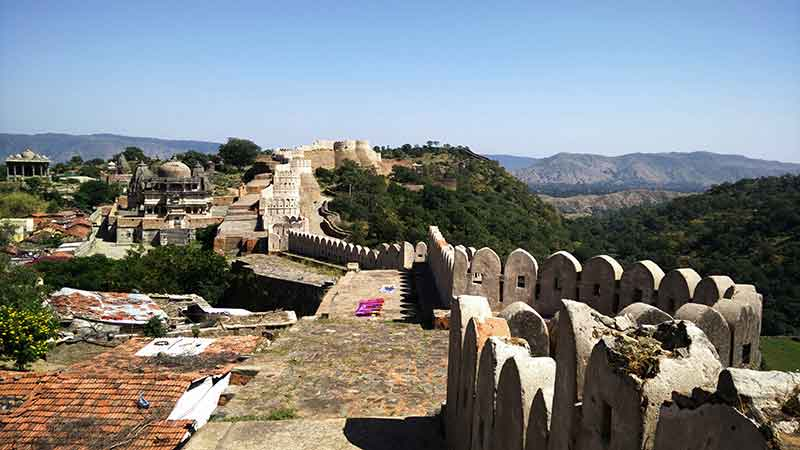
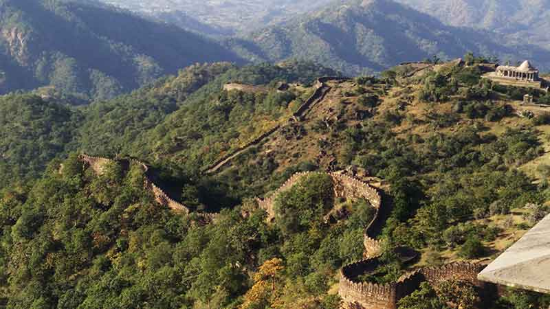
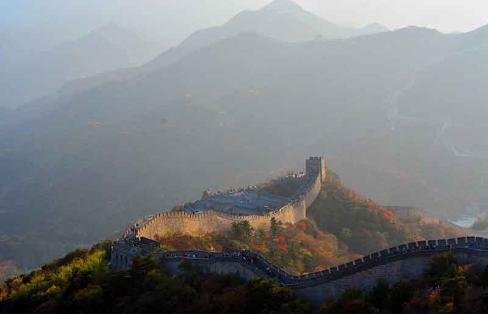
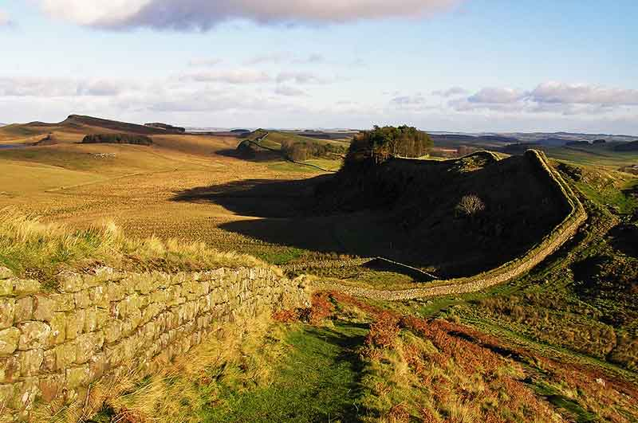


<html></html>
<head>
  <link rel="stylesheet" href="dist/assets/styles/wat_pho.css"/>
  <link rel="stylesheet" href="dist/assets/styles/main.css"/>
  <link href="https://fonts.googleapis.com/css?family=Roboto+Slab|Josefin+Sans" rel="stylesheet" type="text/css"/>
  <title>Kumbhalgarh Fort</title>
</head>
<body>
  <section class="wat_pho clear">
    <div class="content">
      <h2>Kumbhalgarh Fort, Rajasthan, India
        <p><a href="souvenirs.html">Back</a></p>
      </h2>
    </div>
    <h3>KUMBHALGARH FORT - Is it really the second longest wall in the World?</h3>
<p>
     What I had read and heard about the place was immaterial when it finally stood tall in front of me. It was a resplendent structure with daunting gateways, which made me both nervous and excited at the same time. I was nervous because I couldn’t anticipate what to expect beyond it, likewise excited as I was not getting enough of its grandeur.
      <br>
      </p>
    <p>
Let me start at the beginning, there are various ways to reach at this destination to experience, The Great Wall of India at Kumbhalgarh. New Delhi at 675km away is the nearest metro city to Kumbhalgarh via Udaipur:</p>
<ul>
<li>Flight takes 1 hour to Udaipur.</li> 
<li>Train will take 12-16hr from New Delhi railway station to Udaipur Junction.</li>
<li>Bus takes 12-14hr till Udaipur; this was my pocket friendly mode of overnight journey which was 800 INR.</li>
</ul>
<p>Then 2.5hr car drive to cover the 85km stretch between Udaipur to Kumbhalgarh Fort. It was a bumpy ride and once the Aravallis started, it got bumpier with all the hair pin bends. I was almost feeling dizzy when I caught a tiny glimpse of the imperial fort tearing through the hills.
<br>
</p>
    <p>
      When I reached in front of the fort my eyes were not enough to engulf the entire view in one stretch. It stands intimidating with its circular, protruding Bastions which I wonder are called what in Rajasthan Architecture. As Bastions are angular defence structures coined by Romans. I bought a ticket of 10 INR and a parking ticket of 20 INR, for being an Indian national but somewhere I felt that ASI (Archaeological Survey of India) or the govt could charge a little more and invest in maintaining such sites. I mean this price is embarrassingly less compared to other UNSCO World Heritage Sites in different countries even for the locals.<br> 
<b><i>Oh! By the way did I mention that this is also a UNESCO World Heritage Site under the “Hill Forts of Rajasthan”? Yes, this has been done recently in the previous UNESCO meet at Cambodia in 2014.</i></b><br>
Moving on to the apparent fact, is it really the second longest wall in the World?
I had read that The Great Wall of China is around 8,800 km long. It has every right to be known as the GREAT wall. However, at Kumbhalgarh, I found out that the outer wall of the fort to be 38km long which makes it the longest wall of India but it was questionable about being the second longest in the world.<br>
8764km difference between the 1st and 2nd longest wall and both of them are conveniently in Asia. What happened to the Romans, Ottomans, Mayans, Egyptians or the Incas? Why didn’t they build any walls? Didn’t they have a kingdom to protect from outsiders? Why is it that this surreal idea could come into the minds of the Ming Dynasty and Sisodia Rajputs and not others?
      <br>
            
    </p>
    <p>
     Actually, it had!<br> 
Hadrian Wall about 117km in length presently situated at United Kindom. UNESCO World Heritage Site, in 1987. It was built to fulfil the purpose of separation amongst Romans and others and unite the Roman Kingdom.<br>
Antonine Wall, although shorter than the former but still a 60 km long stretch and had significantly more forts than Hadrian’s Wall. It was garrisoned with same number of men and more advanced with large platforms for ballistae. Situated up north to Hadrian, it falls in the land of Scots also made by the Romans to defend their land and tribe.
      <br>
      
    </p>
    <p>
      However, Hadrian Wall falls at the territorial division on England and Scotland.<br>
*Sources: bbc.co.uk </p>
<p style="text-align:right"><a href="https://www.facebook.com/ar.shefali">-Shefali Nayak</a></p>
<a href="index.html">
      <button>back to home</button></a>
  </section>
  <section id="footer" class="footer clear">
    <center>
      <div class="content clear">
        <div class="content-1">
          <p><span>WALK</span> <br> 4B/28, 2nd Floor, Tilak Nagar, New Delhi, Delhi 110018.
            <!--a(href='support.html') read more &#10140;-->
          </p>
        </div>
        <div class="content-2">
          <div class="content-2-1">
            <p><span>TALK</span><br> the.rovers@outlook.com</p>
          </div>
          <div class="content-2-2">
            <p><span>STALK</span>
              <ul id="social_icons">
                <li><a href="https://facebook.com/rover.org"></a></li>
                <li><a href="https://www.youtube.com/channel/UCAH9TX_LhImPk9YEKKjf26A"></a></li>
                <li><a href="https://instagram.com/the.rovers"></a></li>
                <li><a href="https://twitter.com/rovers_org"></a></li>
                <li><a href="https://plus.google.com/u/0/b/100252120756478981295/100252120756478981295/about"></a></li>
                <li><a href="http://issuu.com/therovers"></a></li>
              </ul>
            </p>
          </div>
        </div>
      </div>
      <p class="rightpara">copyrights@2015 rovers.org.in</p>
    </center>
  </section>
</body>